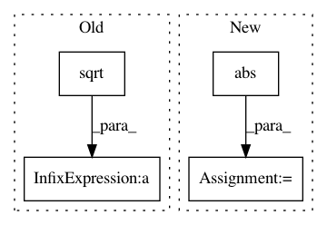

39dc6942a69a280cb6935c48c0d524d2dd2d9385,dipy/core/generalized_q_sampling.py,,triple_odf_maxima,#Any#Any#Any#,220
Before Change
indmax2, odfmax2 = equatorial_maximum(vertices,\
odf, vertices[indmax1], width)
cross12 = np.cross(vertices[indmax1],vertices[indmax2])
cross12 = cross12/np.sqrt(np.sum(cross12**2))
indmax3, odfmax3 = patch_maximum(vertices, odf, cross12, width)
return [(indmax1, odfmax1),(indmax2, odfmax2),(indmax3, odfmax3)]
After Change
eqvert = equatorial_zone_vertices(vertices, pole, width)
indmax2, odfmax2 = equatorial_maximum(vertices,\
odf, pole, width)
indmax3 = eqvert[np.argmin([np.abs(np.dot(vertices[indmax2],vertices[p])) for p in eqvert])]
odfmax3 = odf[indmax3]
"""
cross12 = np.cross(vertices[indmax1],vertices[indmax2])
cross12 = cross12/np.sqrt(np.sum(cross12**2))
indmax3, odfmax3 = patch_maximum(vertices, odf, cross12, 2*width)
In pattern: SUPERPATTERN
Frequency: 3
Non-data size: 4
Instances
Project Name: nipy/dipy
Commit Name: 39dc6942a69a280cb6935c48c0d524d2dd2d9385
Time: 2010-11-10
Author: iannimmosmith@gmail.com
File Name: dipy/core/generalized_q_sampling.py
Class Name:
Method Name: triple_odf_maxima
Project Name: librosa/librosa
Commit Name: b835d5b330dad5cb9cb38597f2d1969946d8b48b
Time: 2018-02-10
Author: brian.mcfee@nyu.edu
File Name: librosa/core/constantq.py
Class Name:
Method Name: icqt
Project Name: nipy/dipy
Commit Name: 70ae11c05da20cb3e1e7d6a9209dcf7d244acc57
Time: 2010-03-11
Author: matthew.brett@gmail.com
File Name: dipy/io/dwiparams.py
Class Name:
Method Name: B2q